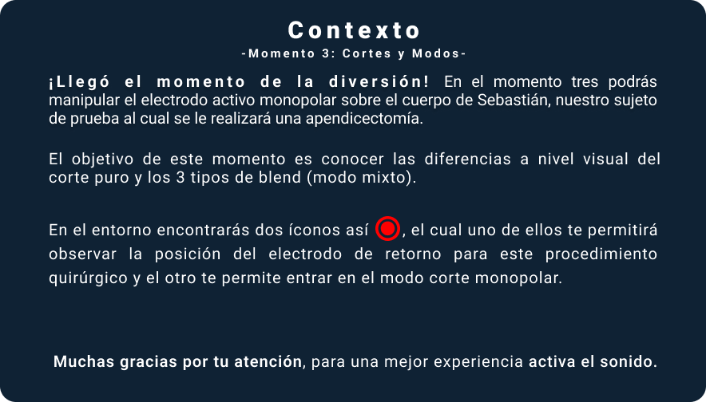
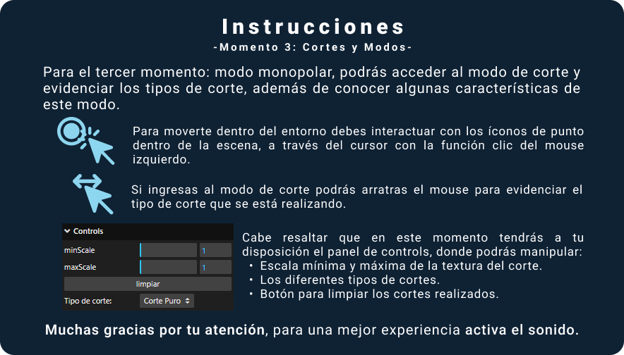
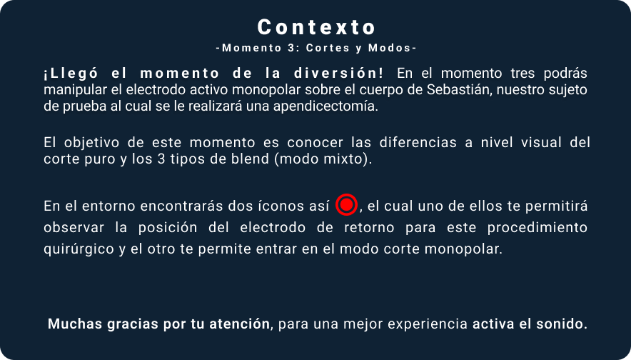
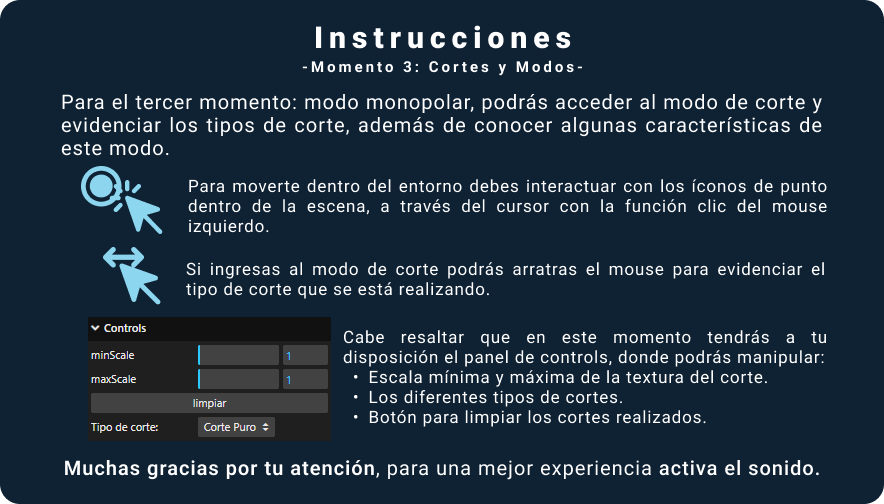

Como se puede observar, el electrodo de retorno está posicionado en la pierna derecha, lugar idóneo para la apendicectomía. Recuerda que para el posicionamiento correcto del electrodo de retorno, se debe tener en cuenta: el área de aplicación debe tener buena musculatura y vascularización; evitar prominencias óseas, implantes metálicos y regiones adiposas del cuerpo; el área debe estar limpia (no se debe limpiar con alcohol ya que puede provocar mayor resistencia en la piel) y no debe tener vello ya que este se considera aislante. Además, la placa debe estar de 10 a 15 centímetros de distancia del lugar de incisión.
 


